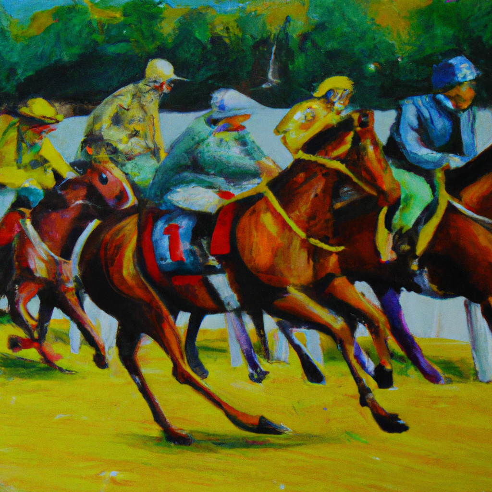

Winning the race
Once upon a time, there was a young man named Jack who had always dreamed of winning a race. He had trained hard, and had worked hard to improve his running speed and endurance.
One day, it was time for the annual town race. Jack was determined to do his best and win the race. He was nervous, but also excited, as he lined up at the starting line with the other runners.
The starting gun went off, and Jack took off running as fast as he could. He felt the wind rushing past him, and his heart beat faster as he raced forward. He could see the finish line in the distance, and it felt like it was getting closer and closer.
Finally, he reached the finish line and passed the other runners. He had won the race! Everyone cheered for him, and he felt proud and happy that he had achieved his goal. He had worked so hard to win, and now he had finally done it.
Jack celebrated his victory with his family and friends, and his hard work and determination were an inspiration for others. He had achieved his dream of winning the race, and he knew that anything was possible if he kept working hard.